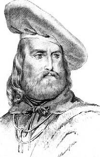
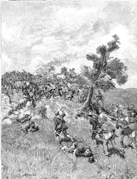
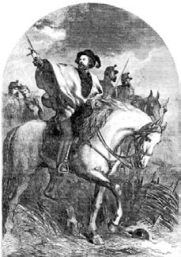
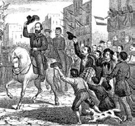

29 Mart 1897
Dün gece dükkândaki bir komodin çekmecesinin dibindeki buruşuk kâğıtları karıştırırken, olasılıkla Torinolu işverenlerime ayrıntılı bir rapor hazırlayabilmek için karaladığım müsvedde ile karşılaşmasaydım 1860 Haziranı ile 1861 Martı arasında yaptığım Sicilya seyahatimin olaylarını ve özellikle de duygularımı hatırlayabilir miydim bilmem. Bunlar yetersiz notlardı, belli ki sadece önemli bulduğum ya da önemli görünmesini istediğim şeyleri kaleme almıştım. Hangi konuda suskun kaldığımı hiç bilmiyorum.
* * *
6 Haziran'dan beri Emma gemisindeyim. Dumas beni büyük bir nezaketle karşıladı. İnce dokunmuş soluk kahverengi ceketiyle görünümü melezliğini ortaya koyuyordu. Zeytuni teni, belirgin, kalın, şehvet uyandıran dudakları, Afrika yerlisi gibi kıvırcık saçları vardı. Canlı ve alaycı bakışları, kibar gülümsemesi ve bon vivant olduğunu ortaya koyan tombulluğu dikkat çekiyordu... Hakkındaki pek çok efsaneden biri geldi aklıma: Paris'te münasebetsizin biri, onun olduğu bir ortamda alaycı bir dille ilkel insanla daha alttürler arasında bir bağlantı kuran kurama değinmişti. Yazar da adama şu yanıtı vermişti: "Evet beyefendi, ben maymundan geliyorum. Ama siz ona doğru ilerliyorsunuz!"
Dumas beni kaptanı Beaugrand, ikinci kaptanı Bremond, dümenci (yaban domuzu gibi kıllı, sakalı ve saçı yüzünün her noktasında birbirine karışmış, gözlerinin beyazından başka bir yerini tıraş etmiyormuş gibi görünen) Podimatas ve aşçısı Jean Boyer ile tanıştırdı. Dumas'ın tavrından aşçının geminin en önemli kişisi olduğu anlaşılıyordu. Yazar bir zamanların soyluları gibi büyük bir ekiple seyahat ediyordu.
Podimatas beni kamarama götürürken Boyer'nin en özel yemeğinin asperges aux petits pois olduğunu ve içinde bezelye bulunmadığı için bunun çok ilginç bir tarif sayılabileceğini söylüyordu.
Garibaldi'nin savaşmadığı zamanlarda gizlendiği Caprera Adası'nı geçtik.
"Generalle pek yakında karşılaşacaksınız" demişti Dumas ve bunu söylerken bile yüzünde bir hayranlık ışıltısı belirmişti. "Sarışın sakalı ve mavi gözleriyle Leonardo'nun Son Yemek tablosundaki İsa'yı andırıyor. Hareketleri son derece zarif, sesinde inanılmaz bir tatlılık var. Sakin bir insana benziyor ama karşısında İtalya ve bağımsızlık sözcüklerini andığınız anda onun bir yanardağ gibi uyandığını, ateş ve lav püskürtmeye başladığını görürsünüz. Savaşmak için asla silahlanmaz; eyleme geçeceği an karşısına çıkan ilk kılıcı kınından çeker ve düşmanın üzerine atlar. Tek bir zaafı vardır: Bocce oyununda bir numara olduğunu sanır."

"Generalle pek yakında karşılaşacaksınız " demişti Dumas ve bunu söylerken bile yüzünde bir hayranlık ışıltısı belirmişti. "Sarışın sakalı ve mavi gözleriyle Leonardo'nun Son Yemek tablosundaki İsa'yı andırıyor."
Az sonra gemide büyük bir telaş yaşandı. Denizciler Korsika'nın güneyindekilere benzer kocaman bir deniz kaplumbağası yakalıyorlardı. Dumas pek heyecanlanmıştı.
"İşimiz çok şimdi. Onu önce sırtüstü devirmek gerekir ki boynunu dışarı çıkartsın. O zaman bu hatasından yararlanıp başını kesivereceğiz ve sonra on iki saat boyunca kuyruğundan asıp kanının akmasını bekleyeceğiz. Sonra yeniden sırtüstü yatıracağız, sağlam bir bıçakla karnını ve sırtını deşeceğiz ve bunu yaparken safrasını delmemeye dikkat edeceğiz, çünkü o zaman yenmez olur. Ardından iç organları çıkartılacak ve sadece karaciğeri saklanacak; karaciğerin çevresini saran zar bir işe yaramaz ama dana etini andıran iki et parçası hem beyazlığı hem lezzetiyle mükemmeldir. En son olarak da zarını, boynunu ve yüzgeçlerini ayırır, etini ceviz büyüklüğünde keser, kanını temizler ve karabiber, karanfil, havuç, kekik ve defneyle birlikte suya koyarız ve üç ya da dört saat kısık ateşte pişiririz. Bu arada maydanoz, taze soğan ve hamsiyle tatlandırılmış tavuk etini şerit şerit keseriz ve kaynayan sebze suyuna atarız. Pişince süzer ve bu arada içine üç dört bardak sek Madera şarabı eklediğimiz kaplumbağa çorbasına katarız. Madera yoksa bir kadeh rom kattığımız Marsala şarabı da olur. Ama bu pek yakışmaz. Çorbamızı yarın akşam tadacağız."
Leziz yemekleri seven bu adamdan melez de olsa hoşlanıyordum.
* * *
(13 Haziran) Emma bir önceki gün Palermo'ya vardı. Garibaldi'nin kırmızı gömleklilerinin hareketlendirdiği şehir gelincik tarlasını andırıyor. Ne var ki pek çok Garibaldi gönüllüsü akıllarına estiği gibi giyinmiş ve silahlanmışlar; bazıları da sivil giysilerinin üzerine uyduruk bir şapka takıp ona bir tüy kondurmuşlar. Artık kırmızı kumaş zor bulunur olmuş ve bu renkteki bir gömleğin fiyatı servet halini almış; ilk ve en kanlı savaşlardan sonra Garibaldi'nin yanında yer alan yerel soyluların oğulları bu konuda Cenova'dan gelen gönüllülerden daha şanslılar elbette.
Cavalier Bianco Sicilya'da yaşayabilmem için yeterince para vermişti ve oraya yeni düşmüş bir andavallı gibi görünmemek için yeterince yıpranmış bir üniforma ediniverdim; gömleğim yıkanmaktan pembeye dönüşmeye başlamıştı, pantolonum dökülüyordu. Gene de gömleğe on beş frank verdim; oysa bu paraya Torino'da dört gömlek alabilirdim.
Burada her şeyin mantık dışı bir ederi var: bir yumurta dört para, bir libre ekmek altı para, bir libre et otuz para. Bunun nedeni adanın yoksulluğu ve işgalcilerin az olan kaynaklara üşüşmesi mi yoksa Palermo halkının şu gökten inmiş Garibaldi yanlılarını söğüşleme niyeti mi bilmem.
İki büyüğün Senato Sarayı'nda karşılaşması (Dumas heyecanla "1830'un Paris Belediyesi gibi!" diyordu) çok teatral olmuş. İkisinden hangisi daha fazla maskaralık etti bilmem.
"Sevgili Dumas, sizin yokluğunuzu hissediyordum" diye bağırmış General kendisini kutlayan yazara. "Beni değil, beni değil, bu adamları kutlayın. Hepsi birer devdi!" Sonra kendi adamlarına dönerek şöyle demiş: "Bay Dumas'ya hemen sarayın en güzel dairesini verin. İki bin beş yüz asker, iki bin tüfek ve iki geminin gelmekte olduğunu müjdeleyen mektubu ileten bir insana borcumu kolay ödeyemem..."
Ben, babamın ölümünden sonra kahramanlara karşı beslediğim duygular yüzünden bu kahramana da güvensizlikle bakıyordum. Dumas bana onu bir Apollon gibi tanıtmıştı, oysa kısa boylu, sarışın değil açık kumral, kısa ve çarpık bacaklı ve yürüyüşüne bakılacak olursa romatizmalı bir adam vardı karşımda. Atına bin bir zahmetle ve ancak iki adamının yardımıyla binebilmişti.
Öğleden sonranın ilerleyen saatlerinde Kraliyet Sarayı'nın önünde toplanan kalabalık "Yaşasın Dumas, yaşasın İtalya!" diye haykırmaya başladı. Yazarın bundan pek hoşnut olduğu belliydi ama bu bana arkadaşının kendini beğenmişliğini bilen ve vaat edilen tüfeklere gereksinmesi olan Garibaldi tarafından düzenlenmiş bir hareket gibi geldi. Ben de kalabalığa karıştım ve Afrikalılar gibi konuşan Sicilyalıların o acayip lehçeleriyle neler konuştuklarını anlamaya çalıştım; arada şöyle kısa bir diyalog yakalayıverdim: Biri ötekine adını haykırdıkları Dumas'nın kim olduğunu soruyordu ve öteki de onun altın içinde yüzen ve parasını Garibaldi'ye sunmak üzere gelen bir Çerkez prensi olduğunu söylüyordu.
Dumas beni generalin bazı adamlarıyla tanıştırdı; Garibaldi'nin vekili korkunç Nino Bixio'nun ürkütücü bakışlarından çok etkilendim ve öyle korktum ki yanından uzaklaştım. Kimsenin beni fark etmeyeceği, rahatça gidip gelebileceğim bir pansiyon aramalıydım.
Şimdi Sicilyalıların gözünde bir Garibaldi yanlısı, sefer ekibinin gözünde serbest muhabirdim.
* * *
Nino Bixio'yu atıyla kentin içinden geçerken yeniden gördüm. Söylentilere göre bu harekâtın gerçek askeri önderi oymuş. Garibaldi'nin dikkati dağılıyor, sürekli yarın ne yapacağını düşünüyor ama Bixio şimdiki anı düşünüyor ve birliklerini düzene sokuyor. Geçerken, yanımdaki bir Garibaldi yanlısının yoldaşına şöyle dediğini işittim: "Gözlerine bak; yıldırımlar yağdırıyor. Profili kılıç gibi kesiyor. Bixio! Adı bile insanın zihninde şimşek çaktırıyor."
Garibaldi ve temsilcilerinin bu gönüllüleri hipnotize ettiği açık. Fena. Cazibesi fazla olan önderlerin kafaları, krallıkların huzuru ve iyiliği için çabuk kesilir. Torino'daki patronlarım haklılar: Bu Garibaldi efsanesi kuzeyde de yayılmamalı, yoksa yukarıdaki kullar da birer kırmızı gömlek giyerler ve cumhuriyet gelir.
* * *
(15 Haziran) Yerel halkla konuşmak zor. Açık seçik olan tek şey, onların ifadesiyle Piemonteli gibi görünen herkesi sömürmeye çalışmaları; oysa gönüllüler arasında Piemonte'den gelen çok az kişi var. Ucuza karın doyurabileceğim bir lokanta buldum; adını telaffuz edemediğim yemekler yiyorum. Dalak eti doldurulmuş ekmekleri tıkınıyorum; buranın iyi şarapları insana birden fazlasını yutturuyor. Yemekte iki gönüllüyle ahbap oldum; biri yirmili yaşlarındaki Liguryalı Abba, öteki de benim yaşlarımdaki Livornolu gazeteci Bandi. Onların anlattıklarından Garibaldi yanlılarının buraya gelişini ve ilk çarpışmalarını gözümün önünde canlandırabildim.
"Ah, bilseydiniz sevgili Simonini" diyordu Abba. "Marsala'ya yanaşmamız bir sirk gösterisini andırıyordu. Bourbon gemileri Stromboli ve Capri karşımızda belirince bizim gemi Lombardo bir kayalığa çarptı: Nino Bixio teknemize el koyacaklarsa bunun sağlam değil karnı deşik bir şekilde olmasını yeğleyeceğini ve hatta Piemonte'yi de batırmamız gerektiğini söyledi. Müthiş bir savurganlık diye düşündüm ben ama Bixio haklıydı; Bourbonlara iki gemi birden hediye edemezdik; büyük komutanlar böyle yaparlar: kıyıya yanaşınca gemileri yakarlar ki geri dönüş olmasın. Piemonte'de bulunan askerler inmeye başlarken Stromboli top ateşine başladı ama top tutukluk yaptı. Limandaki bir İngiliz gemisinin kumandanı Stromboli'ye çıktı ve kaptana karada İngiliz tebaası bulunduğunu ve uluslararası bir kaza durumunda onu sorumlu tutacağını bildirdi. Biliyorsun, Marsala'daki İngilizlerin şarap konusunda büyük çıkarları var. Bourbon kumandan uluslararası kazaların umurunda bile olmadığını söyledi ve bir kez daha ateşlettiyse de top gene ateş almadı. Bourbon gemileri nihayet birkaç atışı isabet ettirdiklerinde bir köpeği ikiye bölmekten başka kimseye zarar vermediler."
"Yani İngilizler size yardım etmiş oldu, öyle mi?"
"Bourbonları utandıracak biçimde araya girdiler diyelim."
"İyi ama General'in İngilizlerle ne ilgisi var?"
Abba, onun gibi erlerin emirlere boyun eğdiğini ve fazla soru sormadığını ima eden bir işaret yaptı. "Sen asıl şunu dinle, bayılacaksın. General şehre gelince telgrafa el konmasını ve tellerin kopartılmasını emreder. Bir teğmenin yanına asker katıp yollarlar ve onların geldiğini gören telgraf memuru kaçar. Teğmen büroya girer ve Trapani askeri komutanlığına henüz gönderilmiş bir telgraf mesajını bulur. Şöyle yazılmıştır: 'Sardinya bandıralı iki gemi az önce limana girdi ve adam indiriyor.' Tam o anda yanıt gelir. Cenova'da telgraf memuru olan bir gönüllü şifreyi çözer ve metni okur: 'Kaç kişi ve neden iniyorlar?' Bunun üzerine teğmen şöyle bir telgraf yollatır: 'Özür dilerim, yanılmışım; bunlar Girgenti'den gelen kükürt yüklü iki ticaret gemisiymiş.' Trapani'nin tepkisi şu olur: 'Siz aptalın tekisiniz.' Teğmen bunun üzerine telleri kestirir ve çekip gider."
"Gerçeği söyleyelim" diye araya giriyordu Bandi, "gemiden inişimiz Abba'nın söylediği gibi sirki andırmıyordu; karaya ayak bastığımızda Bourbon gemilerinden ilk havan topları ve tüfek atışları başladı. Yalan değil, bayağı eğlenceliydi. Patlamaların ortasında yaşlı ve şişman bir papaz karşımıza çıktı ve elindeki şapkayla bize hoş geldiniz işaretleri yapmaya başladı. Birileri şöyle bağırdı: 'Ne işin var senin burada ihtiyar, taşaklarını deldirmeye mi geldin!' Ama Garibaldi elini kaldırdı ve şöyle dedi: 'Papaz efendi, ne arıyorsunuz? Toplar ne biçim gümbürdüyor, duymuyor musunuz?' Ve papaz yanıtladı: 'Toplar beni korkutmaz; ben Yoksul Aziz Francesco'nun kölesi, İtalya'nın evladıyım!' 'Yani halkla mı berabersiniz?' 'Halkla beraberim, halkla.' O zaman Marsala'nın bizim olduğunu anladık. General, Crispi'yi İtalya Kralı II. Vittorio Emanuele adına vergi tahsildarına göndererek denetimden sorumlu Acerbi'ye emanet edilmiş bütün hasılatın fatura karşılığında teslimini istedi. Henüz İtalya Krallığı diye bir kurum yoktu ama Crispi'nin vergileri toplayan kişiye imzaladığı belge Vittorio Emanuele'nin İtalya Kralı olarak anıldığı ilk belge oldu."
Bu fırsattan yararlanarak hemen şunu sordum: "İyi ama maliyeden sorumlu kişi Yüzbaşı Nievo değil miydi?
"Nievo, Acerbi'nin vekilidir" diye düzeltti Abba. "Çok genç olmasına karşın şimdiden ünlü bir yazardır. Gerçek bir şairdir. Zekâsının parlaklığı alnında parlar gibidir. Hep yalnız dolaşır, sanki bakışlarıyla ufku genişletmek istercesine uzaklara bakar. Sanırım Garibaldi onu albaylığa terfi ettirmek üzere."
Bandi de işin dozunu kaçırdı: "Calatafimi'deyken ekmek dağıtmak için biraz geride kalınca Bozzetti onu savaşa çağırdı; o da koca kara bir kuş gibi pelerinini iki yana açarak düşmanın üzerine uçarken az daha taşaklarından birini deldiriyordu..."
Duyduklarım Nievo'ya antipati beslememe yetip artmıştı bile. Yaşıtım olduğunu düşündüğüm bu kişi şimdiden bir şöhret olduğunu düşünüyordu. Savaşçı şair. Pelerininin önünü açarsan tabii ki delerler seni; iyi ki göğsüne açılmamış o delik!
Bu noktada Abba ve Bandi Calatafimi Muharebesi'ni anlatmaya başladılar: Bin gönüllü iyi silahlanmış yirmi beş bin Bourbon askerine karşı mucizevi bir zafer kazanmıştı.
"Garibaldi, sultanlara layık doru bir atın üstündedir; delik işli kumaşlarla süslenmiş eyerine oturmuştur; kırmızı gömleğini giymiş, Macar tarzı şapkasını başına kondurmuştur. Salemi'de yerel gönüllüler bize katılırlar. Dört bir yandan gelmektedirler, kimi yaya kimi atlı yüzlerce kişi, müthiş bir görüntüdür bu; dağlılar dişlerine kadar silahlanmışlardır, korkunç yüzlerinde gözleri tabanca ağzı gibi görünür. Ne var ki aralarında bu yörelerin toprak sahipleri, saygın beyler de vardır. Lağımı andıran sokaklarıyla Salemi pis bir yerdir ama rahiplerin güzel manastırları vardır ve biz orada konakladık. O günlerde düşman hakkında farklı bilgiler alıyorduk: Dört bin kişi, hayır on bin kişi, yirmi bin, atlı ve toplu, yukarıda mevzileniyorlar, yok aşağıdalar, ilerliyorlar, geriliyorlar... Ve derken düşman ansızın karşımızda belirir. Tahmini beş bin kişidirler; yok canım der bizden biri, on bin kişi varlar. Aramızda ekilmemiş bir ova uzanır. Napolili avcılar inerler tepelerden. Son derece sakindirler, kendilerinden emindirler, iyi eğitimli oldukları bellidir, bizim gibi çulsuz değillerdir. Ve borazan sesleri ne kasvetlidir! İlk silah sesi öğleden sonra saat bir buçukta işitilir. Ateşi, hintincirlerinin oradan inmeye başlayan Napolili avcılar başlatmıştır. Bizim yüzbaşılar 'Cevap vermeyin, ateşe cevap vermeyin!' diye bağırırlar ama avcıların kurşunları tepemizde öyle vızıldar ki, durmamız olanaksızdır. Derken bir patlama duyulur, sonra bir ikincisi, derken generalin borazancıbaşısı işareti verince ateş başlar. Toplar dolu gibi yağar, tepe üzerimize ateş eden topların dumanıyla tüter; ovayı aştık, ilk düşman hattını yardık, arkamı dönmemle Garibaldi'nin tepede ayakta durduğunu, kınından çektiği kılıcını sağ omzuna dayadığını, çarpışmayı gözlemleyerek yavaş yavaş ilerlediğini gördüm. Bixio ona kalkan olmak için atıyla seğirtti ve şöyle bağırdı: 'Generalim, can vermek mi istiyorsunuz?' Dolu gibi yağan toplara aldırmadan ilerlemeyi sürdüren kumandan 'Ülkemde can vermekten daha güzel ne olabilir?' dedi. O anda generalin kazanmayı olanaksız gördüğünden ölmek istediğini düşündüm. Ama tam o anda bizim toplardan biri sokaktan patladı. Sanki bin koldan yardım alıyorduk. İleri, ileri, ileri! Şimdi ileri emrini çalan ve susmak bilmeyen borazan sesinden başka bir ses duyulmaz olmuştu. Süngü kuvvetiyle birinci, ikinci, üçüncü engeli aşarak tepeye tırmandık, Bourbon birlikleri daha yükseklere çekiliyorlar, toparlanıyor ve sanki güçlerini artırıyorlardı. Onlara yeniden meydan okumak olanaksız görünüyordu, onlar zirvede beklerken bizler yorgun, bitkin, perişandık. Onlar tepede, bizler burada yerdeyken bir anlık mola oldu. Şurada burada bir iki patlama duyuldu; Bourbonlar kayalar yuvarlamaya, taşlar atmaya başladılar ve bunlardan birinin generali yaraladığı söylentisi çıktı. Hintincirleri arasında yakışıklı bir ölümcül yara almış bir gencin iki arkadaşının desteğiyle ayakta tutulmaya çalışıldığını gördüm. Napolililere karşı merhametli olmaları için yalvarıyordu, çünkü onlar da İtalyandı. Bütün bayır şehit doluydu ama tek bir inilti duyulmuyordu. Napolililer zirveden haykırıyorlardı: 'Yaşasın Kral!' Bu arada yardımcı güçler geliyordu. O anda senin geldiğini hatırlıyorum Bandi; baştan aşağı yaralarla kaplıydın, bir kurşun sol memenin üzerine saplanmıştı ve yarım saat içinde öleceğini düşünmüştüm. Oysa son saldırı olduğunda herkesin önünde ilerliyordun; kaç canın vardı senin?"
"Saçmalama" diyordu Bandi; "onlar sadece basit yaralardı."
"Ya bizim için çarpışan Fransiskenler? Hele sıska ve pis biri vardı; alaybozan tüfeğini avuç avuç taşla mermiyle dolduruyor, sonra tepeye tırmanıp ateş ediyordu. Bir tanesi de uyluğundan yaralanmıştı, etinden mermileri çıkartıp yeniden savaşmaya dönüyordu."
Sonra Abba Ammiraglio Köprüsü Muharebesi'ni anımsıyordu: "Tanrı aşkına Simonini, Homeros destanlarını andıran bir gündü! Palermo kapılarındayız ve yerel isyancılardan oluşmuş bir birlik bize yardıma koşuyor. İçlerinden biri 'Tanrım!' diye haykırıyor ve kendi çevresinde dönüyor, bir sarhoş gibi yanlamasına üç dört adım atıyor ve Napolili bir avcının cansız uzandığı iki kavağın dibindeki çukura yuvarlanıyor; avcı olasılıkla bizimkilerin karşısına çıkan ilk nöbetçiydi. Ve sonra gene yağan kurşunlar arasında kendi lehçesiyle seslenen Cenovalıyı işitiyorum: 'Belandi, buradan nasıl geçilir?' Ansızın bir mermi alnına saplanıyor ve kafatasını çatlatarak onu yere seriyor. Ammiraglio Köprüsü'nde, yolda, kemerlerin üstünde, köprünün altında, bostanlarda süngülerle bir kıyım yaşanıyor. Şafak sökerken köprüyü ele geçiriyoruz ama duvarın arkasına gizlenmiş piyade birliğinin açtığı korkunç bir ateşle durduruluyoruz; solumuzdaki süvariler bize destek vermeye çalışırlarken kırlara doğru kovuluyorlar. Köprüyü geçiyoruz, Porta Termini kavşağında toplaşıyoruz ama limandan ateş açan bir geminin ve karşımızda barikat kuran bir birliğin kurşun yağmuruna yakalanıyoruz. Umurumuzda değil. Bir çan aralıksız çalıyor. Ara sokaklara dalıyoruz ve ansızın, Tanrım, o ne görüntü! Zambağı andıran elleriyle demir parmaklıklara tutunmuş, bembeyaz giyinmiş güzeller güzeli üç kız sessizce bize bakıyorlar. Kilise fresklerindeki meleklere benziyorlar. Siz de kimsiniz diye soruyorlar bize, biz de İtalyan olduğumuzu söylüyoruz ve onların kim olduklarını soruyoruz ve onlar rahibe olduklarını söylüyorlar. Ah zavallılar, diyoruz, onları o hapishaneden kurtarıp neşelendirmek hoşumuza giderdi diye düşünürken kızlar 'Yaşasın Azize Rosalia!' diye bağırıyorlar. Biz de 'Yaşasın İtalya!' diye yanıt veriyoruz. Bu sefer onlar da ilahi söylemekten yumuşamış sesleriyle 'Yaşasın İtalya!' diye haykırarak bize zafer diliyorlar. Ateşkes olmadan önce Palermo'da beş gün daha çarpıştık ama rahibeleri bir daha görmedik; fahişelerle yetinmek zorunda kaldık!"

"Ammiraglio Köprüsü'nde, yolda, kemerlerin üstünde, köprünün altında, bostanlarda süngülerle bir kıyım yaşanıyor."IR 1
Bu iki heyecanlı tipe ne kadar güvenmeliyim? Daha gençler, silahla bu ilk tanışmaları, generallerine ilk andan itibaren koşulsuz hayran olmuşlar, Dumas gibi romancı olduklarını düşünüyorlar, anılarını öyle bir süsleyerek anlatıyorlar ki, tavuk kartal oluyor! O çarpışmalarda yiğitçe davrandıkları kuşkusuz ama Garibaldi'nin hedef olmadan ateşin ortasında sakince dolaşıyor olması bir rastlantı olmalı; düşmanlar da mı görmedi onu? Yoksa düşmanlar, yukarıdan gelen bir emirle rastgele mi ateş ediyorlardı?
Bu tip düşüncelerin zihnimde dolaşmaya başlamasının nedeni biraz da yarımadanın başka bölgelerini dolaşmış olan ve benim pek anlamadığım bir dil konuşan lokantacının homurtularıydı. Zaten her şeyi bildiği anlaşılan ve farklı ortamlarda yeni gelenlere karşı güvensizlik sergilemiş olan noter Don Fortunato Musumeci ile konuşmamı öğütleyen de o oldu.
Noterin yanına elbette kırmızı gömlekle gidemezdim; bu nedenle yanımda taşıdığım Peder Bergamaschi'nin cüppesini giymeye karar verdim. Saçıma birkaç fırça darbesi, biraz yağ desteği ve yere indirilmiş bakışlarla lokantadan çıkarken beni kimse tanımıyordu. Aslında pek temkinsizce bir davranış olmuştu bu, çünkü Cizvitlerin adadan kovulacağı söylentileri dolaşıyordu. Neyse ki şansım yaver gitti. Hem ufukta beliren adaletsizliğin kurbanı olarak Garibaldi karşıtı ortamlarda bu kılıkla daha fazla güven uyandırırdım.
Sabah ayininden sonra bir şarapçıda ağır ağır kahvesini yudumlayan Don Fortunato ile konuşmaya başladım. Dükkân merkezi bir yerdeydi, neredeyse şık denebilecek bir mekândı, Don Fortunato kıstığı gözleriyle yüzünü güneşe vermiş huzur içinde oturuyordu; birkaç günlük sakalı, boğucu sıcaklara karşın kara giysisi ve kravatı vardı ve nikotin sarısı parmakları arasında yarı sönmüş bir puro tutuyordu. Bu yörede kahveye bir dilim limon attıklarını fark ettim. Umarım sütlü kahveye de koymuyorlardır.
Yanındaki masaya oturunca sıcaktan yakınmam yetti; hemen bir sohbet tutturduk. Kendimi Vatikan tarafından buralarda olup biteni anlamakla görevlendirilmiş bir görevli olarak tanıttım ve bu Musumeci'nin rahatça konuşmasına olanak verdi.
"Saygıdeğer Peder, gelişigüzel toplanmış ve elden geldiğince silahlandırılmış bin kişinin Marsala'ya gelmeleri ve tek bir adam bile yitirmeden karaya ayak basmaları size mümkün görünüyor mu? İngilizlerden sonra Avrupa'nın en iyi ikinci donanması olan Bourbon gemileri neden rastgele ateş ettiler ve kimseyi vuramadılar? Ve daha sonra Calatafimi'de bin beceriksiz ve işgalcilere hoş görünmek isteyen arazi sahiplerinin kıçlarına bir tekme atarak ortaya attığı birkaç yüz çocuk, dünyanın en iyi eğitimli ordularından birinin karşısına dikildi (Bourbon askeri akademisi ne demektir, bilir misiniz bilmem). Bin ve birkaç şapşal –diyorum– yirmi beş bin adamı kaçırttılar: Zaten ortalıkta Bourbonların sadece birkaç bin tanesi göründü, çünkü geri kalanı henüz kışladaydı. Para devreye girdi efendim, Marsala'daki gemilerin subaylarına ve Calatafimi'de kuşkulu bir başarı gününden sonra henüz dinç olan birlikleri şu gönüllü beyleri defedebilecekken Palermo'ya çekilmeyi yeğleyen Landi'ye kürekle para ödendi. Landi'ye on dört bin ducato verildiği konuşuluyor, biliyor muydunuz? Ya üstlerine? On iki yıl önce Piemonteliler çok daha azına General Ramorino'yu vurmuşlardı; Piemontelilerden hoşlandığımı söyleyemem ama askerlikten anlarlar. Oysa Landi'nin yerine Lanza getirildi ve bence o da para yemişti. Palermo'nun böyle şenlikle fethedilmesine bir bakın... Garibaldi çetesini Sicilyalı suçluların arasından topladığı üç bin beş yüz haydutla güçlendirdi ama Lanza'nın tahminen on altı bin adamı vardı; on altı bin diyorum, dikkat edin. Ve Lanza topluca kullanmak yerine onları küçük gruplar halinde yolladı isyancıların üzerine ve doğal olarak alaşağı edildiler; bu arada bazı para yemiş Palermolu hainler çatılardan ateş etmişlerdi. Limanda, Bourbon gemilerinin gözleri önünde Piemonte gemilerinden isyancılara verilecek silahlar boşaltıldı; Garibaldi'nin karaya ayak basınca Vicaria Hapishanesi'ne gitmesine, kürek mahkûmlarından bin suçluyu serbest bırakıp çetesine katmasına göz yumuldu. Şimdi Napoli'de neler olduğunu hiç anlatmayayım size; zavallı kralımız ücretlerini almış sefiller tarafından çevrilmiş ve toprağın ayağının altından kayıp gitmesini seyrediyor..."
"Peki, nereden geliyor bütün bu para?"
"Saygıdeğer Rahip! Roma'da bu kadar az şey biliyor olmanıza şaşırdım! Tabii ki İngiliz Mason Cemiyeti! Aradaki ilişkiyi görebiliyor musunuz? Garibaldi mason, Mazzini mason; Mazzini Londra'da sürgündeyken İngiliz masonlarıyla bağlantı kuruyor, mason olan Cavour İngiliz localarından emir alıyor, Garibaldi'nin çevresindeki bütün adamlar mason. Bu, sadece İki Sicilya Krallığı'nı yıkmak için değil aynı zamanda Papa Hazretlerine ölümcül bir darbe vurmak üzere de hazırlanmış bir plan, çünkü Vittorio Emanuele İki Sicilya'dan sonra Roma'yı da isteyecektir. Siz gönüllülerin kasalarında doksan bin lirayla yola çıktıkları masalına inanıyor musunuz? Bu para o obur ve ayyaşlara yol boyunca yetmezdi; Palermo'da kalan son erzakı nasıl tüketiyorlar, çevredeki köyleri nasıl soyuyorlar, görmüyor musunuz? İngiliz masonlar Türk işi altın tabakalar içinde Garibaldi'ye üç milyon Fransız frangı yollamışlardı; bu para bütün Akdeniz'e yeter!"
"Kimde peki bu altınlar?"
"General'in en güvendiği mason olan Yüzbaşı Nievo; daha otuz yaşında bile olmayan bu süt kuzusu, kasayı elinde tutuyor. Bu şeytanlar generallere, amirallere para ödüyorlar ama çiftçiyi açlıktan öldürüyorlar. Oysa onlar Garibaldi'nin ağaların topraklarını paylaştıracağını umuyorlardı: General elbette toprağı ve parası olanla işbirliği yapmak zorunda. Calatafimi'de can vermeye giden o çocukların burada hiçbir şey değişmediğini gördükleri zaman ölülerden çaldıkları tüfeklerle gönüllülere ateş açmaya başlayacağına siz de tanık olacaksınız."
Rahip cüppemi çıkartıp kırmızı gömleğimle şehirde dolaşırken kilise merdivenlerinde Peder Carmelo adında bir rahiple çene çaldım. Yirmi yedi yaşında olduğunu söyledi ama kırkında gösteriyordu. Bize katılmak istediğini ama onu engelleyen bazı şeyler olduğunu itiraf etti. Calatafimi'de papazların da bulunduğunu hatırlatarak bunun ne olduğunu sordum.
"Gerçekten yüce bir şey yapacağınızı bilsem sizinle gelirdim. Bana söyleyebildiğiniz tek şey, İtalya'yı tek bir halk olarak birleştirmek oluyor. Ama birleşmiş veya bölünmüş olsun, halk acı çekiyorsa acı çekiyordur: Onların acı çekmesini engelleyebilecek misiniz bundan emin değilim."
"Ama halkın özgürlüğü ve okulları olacak" dedim ona.
"Özgürlük de okul da karın doyurmaz. Bunlar siz Piemontelilere yetebilir ama bize yetmez."
"Siz ne istiyorsunuz?
"Yoksulların Bourbonlara değil, onları aç bırakanlara karşı savaşmalarını istiyoruz. Aç bırakanlar ise sadece sarayda bulunmuyorlar, her yerdeler."
"O halde dört bir yanda toprakları ve manastırları olan siz papazlara karşı da savaşılmalı."
"Bize karşı da, evet, hatta bütün ötekilerden önce bize karşı! Ama bir elde İncil, bir elde haçla. O zaman size katılırdım. Böylesi yetmiyor bana."
Komünistlerin ünlü manifestosunun üniversitesinde öğrendiğime göre bu rahip onlardan biriydi. Sicilya'yı anlamak gerçekten zordu.
* * *
Belki dedemle yaşadığım yıllardan kalma bir takıntı sonucudur ama ansızın Garibaldi'yi destekleme komplosunda Yahudilerin de payı olup olmadığını merak etmeye başladım. Genellikle her şeyle ilgileri vardır. Bir kez daha Musumeci'ye danıştım.
"Olmaz olur mu?" dedi bana. "Hatta bütün masonlar Yahudi değilse bile bütün Yahudiler masondur. Peki, Garibaldi yanlıları arasında kimler var? 'Kahramanların Onuruna' adıyla yayımlanan Marsala gönüllülerinin listesini didik didik ettim. Ve orada Eugenio Ravà, Giuseppe Uziel, Isacco D'Ancona, Samuele Marchesi, Abramo Isacco Alpron, Moisè Maldacea ve aslında Abramo olan bir Colombo Donato adlarını buldum. Bu adları taşıyanların iyi birer Hıristiyan olup olmadıklarını siz söyleyin bana."
* * *
(16 Haziran) Tanıtma mektubumla Yüzbaşı Nievo'ya yaklaştım. Bakımlı bıyıkları, dudağının altına sinek konmuş gibi duran sakalıyla züppenin tekiydi ve hayalperest bir tavrı vardı. Konuşmamız sırasında bir ara vermek zorunda kaldık, çünkü içeriye giren bir gönüllü alınması gereken birtakım battaniyelerden söz etti ve o da tutumlu bir muhasebeci gibi ona bir önceki hafta on battaniye aldığını hatırlattı. "Yiyor musunuz siz bu battaniyeleri?" diye sordu. Ve ekledi: "Başka yemek istiyorsan, yollarım, hücrede yersin." Bunu duyan gönüllü anında selam vererek yok oldu.
"Nelerle uğraşmak zorundayım, görüyor musunuz? Size edip olduğumu söylemişlerdir. Oysa burada askerlerin para ve giyim gereksinmelerini karşılamak, Cenova, La Spezia ve Livorno'dan her gün gelen yeni gönüllüler için yirmi bin yeni üniforma sipariş etmekle ilgileniyorum. Bir de ricalar var, örneğin maaş olarak ayda iki yüz ducato isteyen kontlar ve düşesler, ve bunlar Garibaldi'nin Tanrı'nın bir meleği olduğunu sanıyorlar. Burada herkes her şeyin tepeden inmesini bekliyor; bizim oralarda kim ne istiyorsa elini taşın altına sokar. Kasayı bana emanet etmelerinin nedeni Padova'da aynı zamanda hukuk eğitimi de almış olmam olmalı ya da prens ile dolandırıcının bir olduğu ve çalmamanın bir erdem sayıldığı bu adada hırsızlık etmediğimden eminler."
Belli ki dalgın şair pozlarında. Ona albay olup olmadığını sorduğumda bana bunu bilmediğini söyledi: "Biliyor musunuz" dedi bana, "burada durum biraz karışık. Bixio sanki Pinerolo'daymışız gibi Piemonte tarzı bir askeri disiplin kurmak istiyor ama biz bir başıbozuklar çetesiyiz. Torino'da bir makale yazacak olursanız bu sefillikten söz etmeyin. Herkesi sarmış olan gerçek heyecanı anlatın. Burada inandığı bir şey uğruna hayatını tehlikeye atan insanlar var. Gerisini sömürge topraklarında bir serüven olarak görün. Palermo yaşamak için eğlenceli bir yer; dedikodular Venedik'i aratmıyor. Bizlere kahramanlar gibi hayranlık duyuluyor ve iki karış kırmızı gömlek ve yetmiş santimlik kılıç bizi erdemleri sadece görünürde kalan güzel kadınların gözünde arzulanır kılıyor. Tiyatroda locamızın olmadığı bir akşam yok ve likörler çok leziz."
"Pek çok harcamanız olduğunu söylediniz. Cenova'dan gelirken yanında getirdiğiniz o azıcık parayla nasıl idare ediyorsunuz? Marsala'da el koyduğunuz parayı mı harcıyorsunuz?"
"Onlar bozukluk sayılır. Aslında Palermo'ya gelir gelmez General, Crispi'yi gönderdi ve İki Sicilya Bankası'ndan para çektirdi."
"Evet kulağıma çalındı; beş milyon ducato'dan söz ediliyor."
Şair o anda yeniden generalin güvenilir adamı pozuna geçti. Gözlerini göğe dikti: "Ah, neler söyleniyor, bir bilseniz. Gene de İtalya'nın daha doğrusu Avrupa'nın her tarafındaki yurtseverlerin bağışlarını dikkate almalı ve bunu Torino'daki gazetenize yazmalısınız ki yanılanlar gerçeği öğrensin. Her neyse, en zoru defterleri düzenli olarak tutabilmek, çünkü İtalya Krallığı resmen kurulunca, her şeyi kusursuz biçimde Majestelerinin hükümetine teslim edeceğim; ne girdide ne çıktıda bir kuruş bile hata olmamalı."
İngiliz masonlarının milyonlarıyla nasıl başa çıkacaksın peki? diye geçiriyordum içimden. Yoksa sen, Garibaldi ve Cavour hepiniz anlaştınız mı aranızda: Paralar geldi ama bunlardan söz etmek yok! Ya da para geldi ama senin haberin yok, bir şey bilmiyorsun, çünkü kimileri (kim?) seni bir korkuluk gibi, küçük erdemli adam gibi vitrin olarak kullanıyor ve sen savaşların sadece Tanrı'nın inayetiyle kazanıldığını sanıyorsun. Bu adam benim gözümde hâlâ şeffaf değildi. Sözlerinin içtenlikli olduğunu düşündüğüm tek yanı, gönüllüler o hafta doğu kıyısına doğru ilerler, zaferden zafere koşarak boğazı geçer ve Calabria'ya, sonra Napoli'ye girerlerken kendinin ekonomik hesapları tutmak ve frene basmak için Palermo'da kalmasının yarattığı derin esefti. İşte böyle insanlar da vardır; yazgı ona güzel likörler ve şık hanımlar sunarken, o mermiler pelerinini delsin ister...
Duyduğuma göre yeryüzünde bir milyardan fazla insan yaşıyormuş. Bunu nasıl saydıklarını bilmem ama Palermo'da şöyle bir dolaşmak bile sayımızın çok fazla olduğunu, birbirimizin ayağına bastığımızı anlamak için yeterli. Ve bunların büyük bölümü pis kokuyor. Şimdiden yiyecek yetmemeye başladı, sayımız daha da artarsa ne olur acaba? Demek ki nüfusu azaltmak gerekiyor. Tabii veba salgınları, intiharlar, idam cezaları var; kimi düelloda birbirine meydan okuyor, kimi ormanlarda, kırlarda at biniyor ve düşüp boynunu kırıyor ve hatta duyduğuma göre İngiliz beyleri denize girip yüzüyorlarmış; tabii sonunda boğuluyorlar da... Ama bu da yetmiyor. İnsanoğlunun sayısının artmasını engellemenin arzulanabilecek en doğal ve etkili yolu savaş. Eskiden savaşa gidenler bunun Tanrı'nın arzusu olduğunu söylemezler miydi? Ama savaşacak insan bulmak gerekiyor. Herkes askerden kaçsa savaşta kimse ölmez. O zaman niye savaşılır ki? Bu nedenle Nievo, Abba, Bandi gibi ateş altına atılmaya hevesliler gereklidir. Ancak o zaman benim gibi çevresindeki insan kalabalığının üzerine üflemesine takanlar daha rahat yaşarlar.
Her neyse, benim hoşuma gitmeseler de, güzel ruhlara gereksinmemiz var.
* * *
Güven mektubumla La Farina'nın huzuruna çıktım.
"Eğer benden Torino'ya iletecek iyi haberler bekliyorsanız, bunu silin kafanızdan. Burada bir hükümet yok. Garibaldi ve Bixio benim gibi Sicilyalıları değil kendileri gibi Cenovalıları yönettiklerini sanıyorlar. Silah altına almanın zorunlu olmadığı bir ülkede otuz bin kişiyi askere çağırma konusu ciddi ciddi düşünüldü. Pek çok köyde hakiki ayaklanmalar yaşandı. Okuma ve yazma bilen yegâne kişiler olan eski krallık memurlarının sivil kurullardan hariç tutulması konusunda emir geldi. Bir önceki gün bazı papaz düşmanları Cizvitler tarafından kurulduğu gerekçesiyle halk kütüphanesini yakmayı önerdiler. Kimselerin tanımadığı Marcilepreli bir genç Palermo'ya vali atandı. Adanın içinde her türden suç birbirini izliyor ve katiller genellikle düzeni sağlamakla yükümlü kişiler oluyor, çünkü gerçek haydutları da kendi aralarına kattılar. Garibaldi namuslu bir adam ama gözlerinin önünde olup biteni fark etmekten aciz: Palermo'nun köylerinden topladığımız bir parti atın iki yüz tanesi kayboldu! Başvuran herkese bölük kurma görevi veriliyor ve sonunda en fazla kırk ya da elli askeri olan ama bandosu, subayı tam olan bölükler çıkıyor ortaya. Aynı görev üç ya da dört kişiye birden veriliyor. Bütün Sicilya'da ne sulh hukuk, ne ağır ceza ne ticaret mahkemesi kaldı, çünkü bütün adalet mekanizması toptan işten çıkartıldı ve herkesi ve her şeyi yargılamak için askeri komisyonlar kuruldu; aynen Unni'nin zamanında olduğu gibi! Crispi ve çetesi, Garibaldi'nin sivil mahkeme istemediğini, çünkü yargıç ve avukatların dolandırıcı olduğuna inandığını söylüyorlar; meclis istemiyormuş, çünkü milletvekilleri kılıç değil kalem erbabıymış; hiçbir kamu güvenlik gücüne izin vermiyormuş, çünkü vatandaşların hepsi silahlanmalı ve kendilerini korumalıymışlar. Doğru mu bilmem ama artık bunu generale onaylatamıyorum bile."
7 Temmuz günü La Farina'nın tutuklandığını ve yeniden Torino'ya gönderildiğini öğrendim. Olasılıkla Crispi'nin aklını çeldiği Garibaldi'nin emriyle oldu bu. Cavour'un artık bir habercisi yok. O zaman her şey benim raporuma bağlı.
Dedikodu toplamak için rahip kılığına girmeme gerek kalmadı: Meyhanelerde her türlü şey konuşuluyor ve çoğu zaman genel gidişattan yakınanlar gönüllülerin ta kendileri oluyor. Garibaldi yanlılarıyla birlikte askere yazılan Sicilyalıların yarısının Palermo'ya girdikten sonra silahları da çalıp geri gittiklerini duyuyorum. Abba mazeret uydurarak "Bunlar saman alevi gibi tutuşan köylüler olduğundan pek çabuk sıkıldılar" diyor. Savaş meclisi onları ölüme mahkûm ediyor ama sonra bırakıyor, canları nereye çekerse oraya gitsin; yeter ki uzak olsun. Bu insanların gerçek duygularının ne olduğunu anlamaya çalışıyorum. Sicilya'yı sarmış olan bütün heyecanın nedeni, burasının aslında Tanrı'nın unuttuğu, güneşin yaktığı, denizden başka yerde suyu olmayan, dikenli meyveden başka şey yetişmeyen bir toprak olması. Yüzyıllardan beri bu topraklarda hiçbir şey olduğu yokken ansızın peşine erlerini takmış olan Garibaldi çıkageldi. Buranın halkı ne Garibaldi'yi tutuyor ne de onun tahtından etmeye çalıştığı kralı. Sadece farklı bir şeyler yaşanması onları sarhoş etmiş gibi. Ve bu farklılığı her biri kendine göre yorumluyor. Belki de bu hızlı yenilik rüzgârı tümünü yeniden uyutacak bir keşişlemeden başka bir şey değildir.
* * *
(30 Temmuz) Belli bir yakınlık kurduğum Nievo bana Garibaldi'nin Vittorio Emanuele'den resmi bir mektup aldığını ve kralın ona boğazı aşmamasını emrettiği sırrını veriyor. Ama buyruğun yanında bizzat kral tarafından yazılmış bir özel not daha var ve burada şunu söylüyor: Size az önce bir kral olarak yazdım, şimdi sizin bana, benim buyruğuma uymayı istediğinizi ama İtalya'ya karşı görevlerinizin sizden kendilerini kurtarmalarını isteyen Napoli halkına yardıma koşmayı gerektirdiğini söyleyebileceğinizi fısıldıyorum. Kral ikili oynuyordu ama kime karşı? Cavour'a karşı mı? Yoksa önce anakaraya çıkmasını yasakladığı, sonra bunu yapması için yüreklendirdiği ve boğazı aştığı zaman bu itaatsizliği cezalandırmak için Piemonte birlikleriyle Napoli'ye müdahale edeceği Garibaldi'ye karşı mı?
"General çok saf ve bir tuzağa düşecek" diyor Nievo. "Onun yanında olabilmek isterdim ama görevim burada kalmamı gerektiriyor."
Kuşkusuz kültürlü bir kişi olan bu adamın da Garibaldi'ye derin bir hayranlık duygusu içinde yaşadığını keşfettim. Bir zaaf anında eline henüz geçen küçük bir kitabı gösterdi bana, Garibaldi Sevdaları müsveddesini son bir kez daha düzeltemediği, kuzeyde basılmış eseriydi.
"Umarım beni okuyanlar, kahramanlık niteliğimin yanı sıra biraz hayvani niteliklerim olduğumu da düşünürler, çünkü yayınevim bunu göstermek istercesine berbat basım hataları yapmış."
Garibaldi'ye adadığı satırlarının üzerinden geçince Nievo'nun biraz hayvan olması gerektiğini düşündüm ben de.
Ne bileyim, var gözünde bir şey
hem de zihninde ışıldayan
ve diz çöktüğünde sanki
insanlık eğiliyor.
Kalabalık meydanlarda
gördüm zarifçe dolaşmasını
ve elini uzatmasını
genç kızlara.

Ne bileyim, var gözünde bir şey / hem de zihninde ışıldayan / ve diz çöktüğünde sanki / insanlık eğiliyor.
Bu çarpık bacaklı ufaklık için burada herkes deli oluyor.
* * *
(12 Ağustos) Dolaşan söylentiyi doğrulatmak için Nievo'ya gidiyorum: Garibaldi yanlıları Calabria kıyılarında karaya çıkmışlar. Ama onu son derece keyifsiz buluyorum, neredeyse ağlamak üzere. Aldığı bir habere göre Torino'da yönetimine ilişkin olumsuz söylentiler dolaşıyor.
"Ama ben burada her şeyin kaydını tutuyorum" diyerek elini kırmızı kurdelelerle bağlı defterlere vuruyor. "Ne kadar aldım, ne kadar harcadım. Ve eğer çalmış olan biri varsa, bu da benim hesaplarımla çıkacaktır ortaya. Bu defterleri ilgili kişiye teslim ettiğimde birkaç kelle uçacak. Ama o benimki olmayacak."
* * *
(26 Ağustos) Bir strateji uzmanı olmasam da aldığım haberlerden neler olduğunu anlayabiliyorum. Nedeni ister mason altını olsun ister Savoia davasına dönüş, bazı Napolili bakanlar Kral Francesco'ya karşı bir komplo hazırlığı içindeler. Napoli'de bir ayaklanma patlayacak, isyancılar Piemonte hükümetinden yardım isteyecekler, Vittorio Emanuele güneye inecek. Garibaldi bir şeyin farkında değilmiş gibi görünüyor ya da her şeyin farkında ve adımlarını hızlandırıyor. Napoli'ye Vittorio Emanuele'den önce varmak istiyor.
* * *
Elindeki mektubu sallayan Nievo'yu öfkeden delirmiş durumda buluyorum: "Arkadaşınız Dumas bana Krezüs imiş gibi davrandığını söylüyor, sonra da Krezüs'ün ben olduğumu söylüyor! Neler yazıyor bir bakın ve yüzsüzce bunu general adına yaptığını söylüyor... Napoli çevresinde İsviçre'nin ve Bavyera'nın paralı askerleri Bourbon parasıyla yenilgiyi tadıyorlar ve adam başı dört ducato'ya kirişi kırmanın peşindeler. Beş bin kişi olduklarından, bu yirmi bin ducato eder yani doksan bin frank. Monte Kristo Kontu'nu andıran Dumas'da böyle bir para yok ve soylu bir bey olarak bin frank gibi bir bozukluk atıyor ortaya. Üç binini de Napolili yurtseverlerin toplayacağını söylüyor. Gerisini de ben koyabilir miyim diye soruyor. İyi ama benim parayı nereden aldığımı sanıyor acaba?"
Beni bir şeyler içmeye davet ediyor. "Bak Simonini, şimdi herkes anakaraya çıkmanın heyecanıyla tutuşmuş durumda ve hiç kimse bu seferimizin tarihi üzerine bir utanç lekesi olacak olan trajediyi fark etmedi. Bu, Catania yakınlarındaki Bronte'de yaşandı. Büyük çoğunluğu çiftçilerden ve çobanlardan oluşan on bin köylü hâlâ Ortaçağ derebeylik dönemini hatırlatan bir yönetime mahkûmdu. Bütün bölge Bronte Dükü unvanıyla Lord Nelson'a verilmişti ve hep zenginlerin elinde kaldı. Halk sömürülüyor, hayvan muamelesi görüyordu, yiyecek ot toplamak için bile efendilerinin ormanlarına giremiyorlar, tarlalara girebilmek için geçiş ücreti ödüyorlardı. Garibaldi geldiği zaman bu insanlar adaletin yerini bulacağını, topraklarının kendilerine iade edileceğini düşünerek liberaller denen komiteler kuruyorlar ve Lombardo adındaki bir avukat da bunların başını çekiyordu. Ama Bronte İngiliz mülkü sayılıyor, İngilizler Marsala'da Garibaldi'ye yardım ettiler, bu durumda hangi tarafı tutacaklar? Bu noktada halk Avukat Lombardo ve öteki liberallere kulak vermekten de vazgeçiyor ve hiçbir şey anlamaz olunca bir halk hareketi patlıyor, kıyım başlıyor ve zenginler katlediliyor. Elbette hata ettiler, isyancıların arasına hapishane kaçkınları da karıştı; malum ya, adada yaşanan kargaşa sonucunda içeride kalması gereken pek çok suçlu ortalığa saçılmıştı... Ama bütün bunlar biz geldiğimiz için oldu. İngilizlerin baskısıyla Garibaldi, Bixio'yu Bronte'ye yolladı ama o da incelikten yoksun bir adamdır: Hemen olağanüstü durum ilan etti, halk üzerinde ciddi şiddet uygulamaya başladı, zenginlerin bildirimlerini dikkate aldı ve Avukat Lombardo'yu isyanın elebaşsısı olarak belirledi; bu doğru değildi ama önemi yoktu, bir ders vermek gerekiyordu ve bu nedenle Lombardo dört kişiyle birlikte kurşuna dizildi. Bu dört kişiden biri daha kıyımlar başlamadan sokaklarda zenginlere lanet okuyarak dolaşan ama kimseyi korkutmayan zavallı delinin tekiydi. Bu vahşetin yarattığı hüzün bir tarafa, olay beni kişisel olarak çok yaraladı. Anlıyor musunuz Simonini? Torino'ya bir yandan bizim eski zenginlerle işbirliği içindeymişiz gibi göründüğümüz bu eylemlerin haberleri gidiyor, bir yandan da size söylediğim gibi paraların kötü harcandığı, toprak sahiplerinin bize yoksulları kurşuna dizmemiz için para ödediği ve bizim bu paraları keyfimiz için yediğimiz haberleri. Oysa siz burada can verildiğini hem de bedavaya can verildiğini görüyorsunuz. Çok kaygılandırıcı bir durum."
* * *
(8 Eylül) Garibaldi direnişle karşılaşmadan Napoli'ye girdi. Olasılıkla kendini pek mağrur hissediyor, çünkü Nievo'nun anlattıklarına göre, Vittorio Emanuele'den Cavour'u kovmasını istemiş. Şimdi Torino'da benim raporuma gereksinme duyacaklar ve anlıyorum ki bunu olabildiğince Garibaldi karşıtı bir bakışla yazmam gerekecek. Mason altınlarını iyice parlatmalıyım, Garibaldi'yi düşüncesiz biri olarak betimlemeliyim, Bronte kıyımını vurgulamalıyım, öteki suçlardan, hırsızlıklardan, yolsuzluklardan, rüşvetlerden, genel israflardan söz etmeliyim. Gönüllülerin davranışlarını Musumeci'nin anlatımına göre aktarmalıyım; manastırlarda oburca yiyorlar, kızları (ve hatta belki genç rahibeleri, renklerin tonu değişebilir) iğfal ediyorlar demeliyim.

Garibaldi direnişle karşılaşmadan Napoli'ye girdi.
Özel mülklere el koyma emri düzenlemeliyim. Adsız muhbir ağzından bir mektup yazarak Garibaldi ve Mazzini'nin Crispi aracılığıyla sık sık haberleştiklerini, Piemonte bölgesinde de cumhuriyet kurmak için planlar yaptıklarını anlatmalıyım. Sözün özü Garibaldi'nin ellerini bağlayacak etkili bir rapor oluşturmalıyım. Zaten Musumeci bana güzel bir konu daha açtı: Garibaldi yanlıları yabancı paralı askerler çetesinden başka bir şey değiller. Bu bin adam arasında Fransız, Amerikalı, İngiliz, Macar ve hatta Afrikalı maceraperestler var; pek çok ulusun döküntü tabakasının yanı sıra Garibaldi ile Güney Amerika ülkelerinde korsanlık yapanlar da şimdi bu serüvende yer alıyorlar. Teğmenlerinin adlarına bakmak bunu anlamak için yeterli: Turr, Eber, Tuccori, Telochi, Maghiarodi, Czudaffi, Frigyessi (Musumeci bu adları tükürür gibi telaffuz ediyordu; ben de Turr ve Eber dışındaki adları hiç duymamıştım). Lehler, Türkler, Bavyeralıların yanı sıra Bourbon ordusundan kaçan Alman ve İsviçrelilere kumanda eden Wolff adında bir de Alman var. İngiliz hükümeti Garibaldi'nin emrine Cezayir ve Hindistan askerlerinden oluşan birlikler de vermiş. Tabii bir de İtalyan yurtseverleri saymalıyız. Gene de bin gönüllünün ancak yarısı İtalyan'dır. Musumeci abartıyor olmalı, çünkü ben çevremde sadece Venedik, Lombardiya, Emilya, Toscana bölgelerinin lehçelerini duyuyorum ve Hintli filan görmedim ama raporumda bu ırk çeşitliliğinden söz etmem fena da olmaz hani.
Elbette masonlara çifte iplikle bağlı olan Yahudilerden söz etmeden geçemem.
Raporumun olabildiğince çabuk bir şekilde Torino'ya ulaşması ve uygun olmayan ellere düşmemesi gerektiğini düşünüyorum. Acilen Sardinya Krallığı'na dönen Piemonteli bir askeri gemi buldum ve kaptanın beni Cenova'ya götürmesini emreden resmi bir belge düzenlemek benim için çocuk oyuncağı. Sicilya konaklamam burada sona eriyor; Napoli ve ötesinde neler olacağını göremeyeceğim için biraz üzülüyorum ama buraya ne eğlenmek ne de bir destan yazmak için gelmiştim zaten. Bu yolculuğumdan bana anı olarak kalacak hazlar pisci d'ovu, babbaluci a picchipachhi olacak; yani bir tür salyangoz yemeği ile şahane hamur tatlıları... Nievo a' sammurigghu dediği bir kılıç balığını tattırmaya söz vermişti ama buna zaman kalmadı; adının yaydığı rayiha ile yetinmek zorundayım.